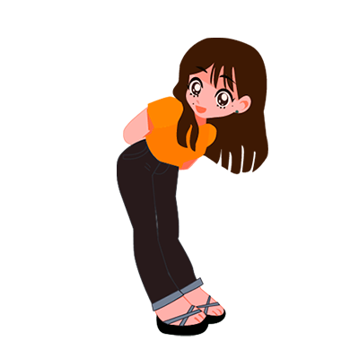

Vanessa Durán Sierra
Artista Digital

Sobre mí.
Soy Vanessa Durán, una artista digital mexicana a la que le apasiona la fotografía, ilustración y el arte gráfico en general.Estoy interesada en generar mensajes visuales atractivos, efectivos y que generen impacto.
Cane
“Si continúo dejando mis pequeñas huellas, algún día estas formarán un camino”Cane nace entre el juego de palabras de acortar mi nombre “Vane”, el apodo que mi familia me puso de Canelita y por el famoso conejo de internet de donde salieron muchos memes. El conejo (logo principal) muestra una cara de determinación que se conecta a mi interés en crear distintas obras de calidad que llenen de la misma alegría al usuario por tener un trabajo completamente personalizado.
He colocado también al conejo sosteniendo un cursor ya que como se puede observar en mi portafolio me gusta mucho trabajar con vectores, creo que es hasta ahora mi forma favorita de hacer ilustraciones como artista digital donde me gustaría seguir mejorando.